- 과제 개요
- 실사화 월드 환경 구축
- 이기종 플랫폼 모델링
- 분산 시뮬레이션 시스템
- 임무 시나리오 검증
- 환경 구축 및 교육
다수/이기종 무인 이동체 운영이 가능한 분산 환경 기반 시뮬레이터 개발
충북대학교 문성태
| 구분 | 내용 |
|---|---|
| 사업 | 과학기술혁신인재양성, 육·해·공 무인이동체 혁신인재양성사업 |
| 상위 과제 | 신개념 교육 인프라 및 전문고등 교육과정 구축 (주관 서울대학교) |
| 위탁 과제 | 다수/이기종 무인 이동체 운영이 가능한 분산 환경 기반 시뮬레이터 개발 |
| 수행 기관 | 충북대학교 |
| 기간 | 2026.05 ~ 2026.12 (8개월) |
| 연구비 | 1억 2천만 원 (부가세 포함) |
| 세부 목표 | 내용 |
|---|---|
| 실사화 월드 환경 구축 | 오창 C-Track 실측 기반 Unreal 월드 1식 (1km² 이상) |
| 이기종 플랫폼 모델링 | 육·해·공 5종 이상 (쿼드콥터, VTOL, 중형/소형 지상, 보트) |
| 분산 시스템 아키텍처 | 군집 운영과 AI 모듈 확장이 가능한 분산 시뮬레이터 |
| 임무 시나리오 검증 | 자폭 군집 드론 시나리오 1건 (정찰, 추적, 자폭, 웹 GCS) |
| 환경 구축 및 교육 | 서울대 내부 서버 구축, 운영 매뉴얼 5부, 교육 1회 |
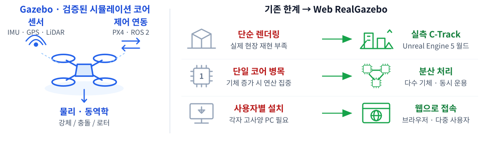
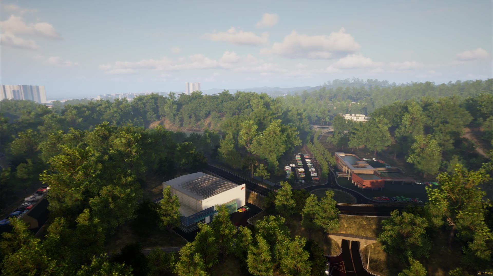
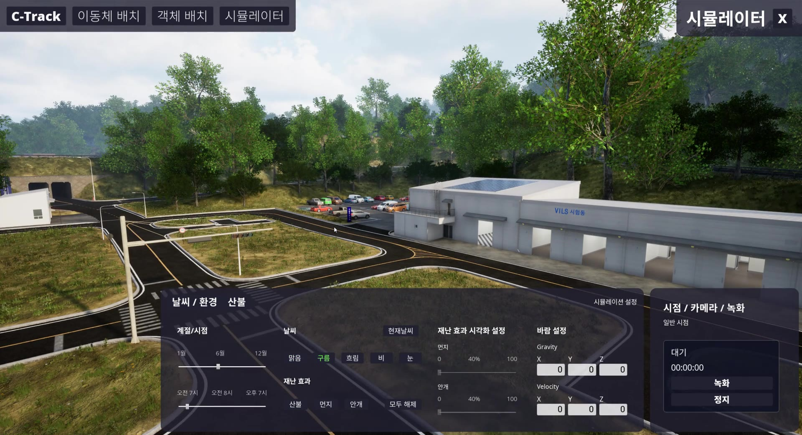
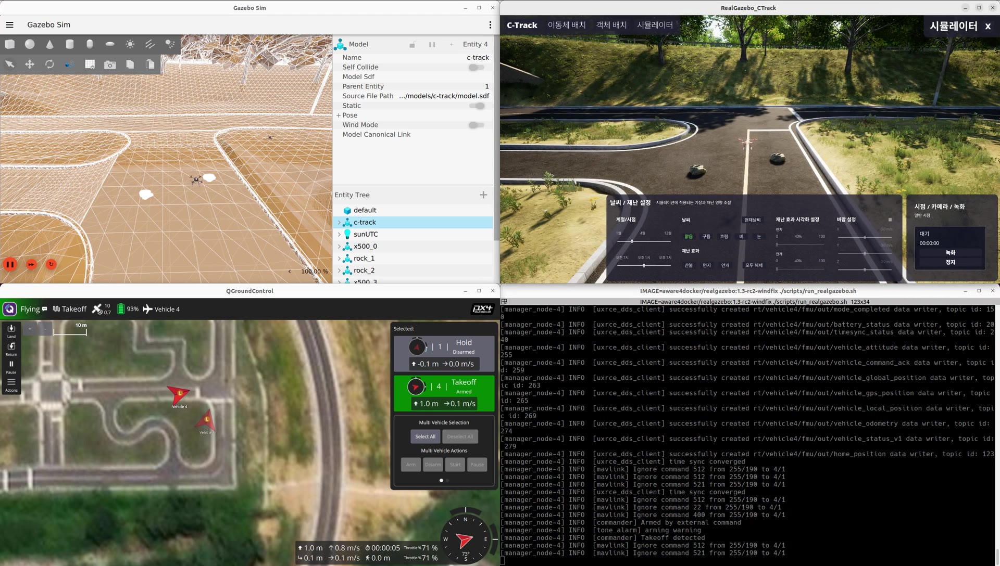
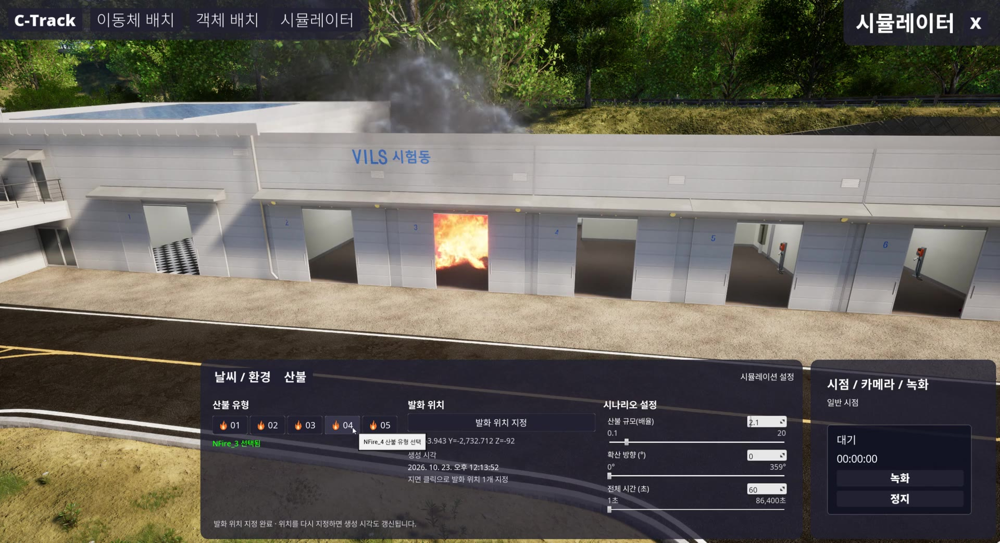
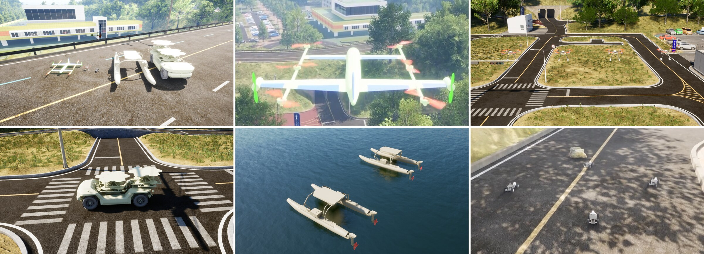
toml[firmware]my-px4 = "~/PX4-Autopilot"test-px4 = "~/work/px4-test/build/px4_sitl_default/bin/px4"[[vehicles]]sysid = 1type = "x500"pose = { x = 0, y = 0 }[[vehicles]]sysid = 3type = "rover_ackermann"pose = { x = 4, y = 0 }firmware = "test-px4"
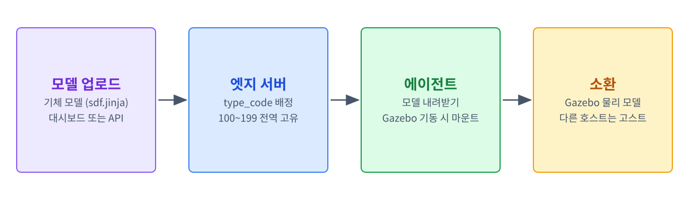
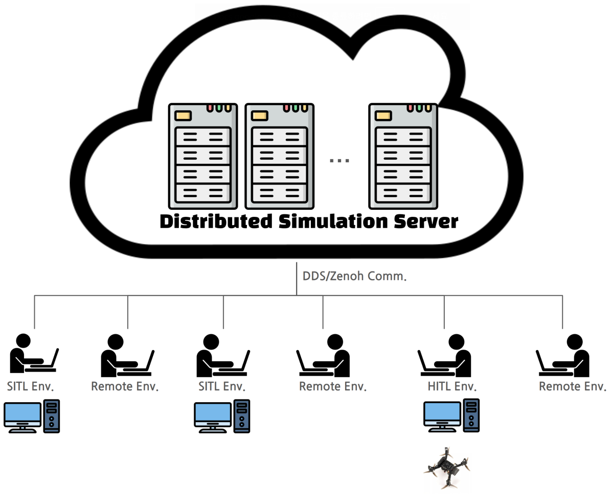
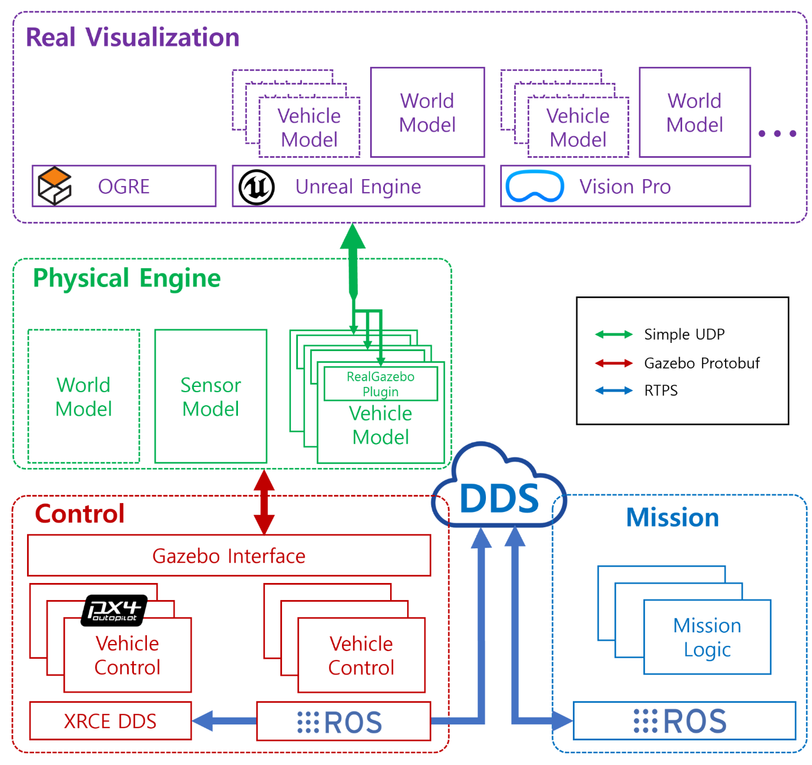
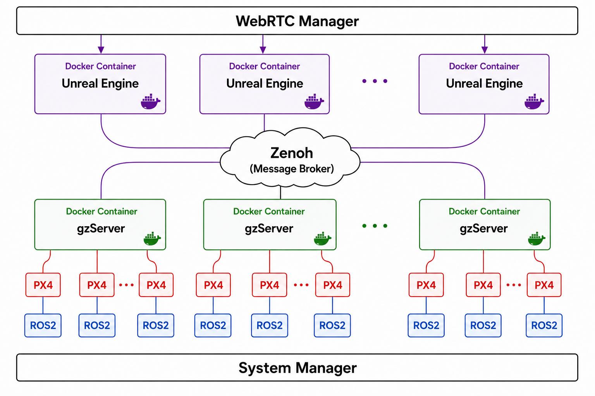
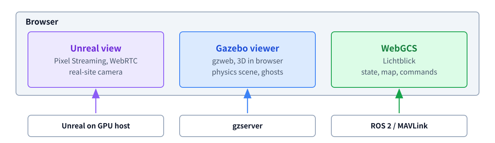
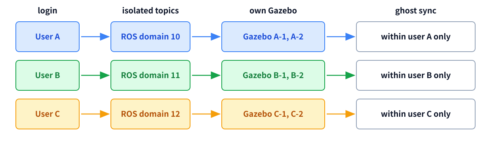
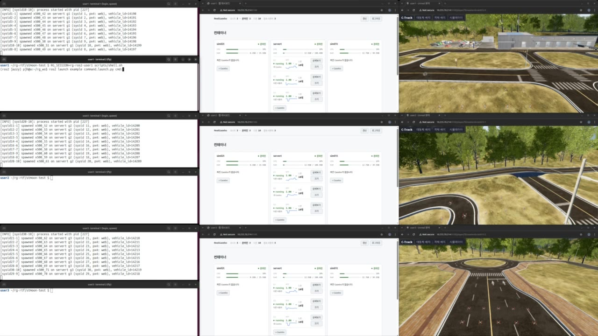
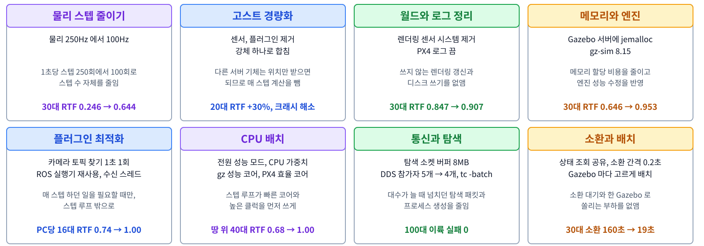
| # | 고스트 경량화 | 센서 시스템 제거 | 성능 모드 | 코어 고정 | bullet | 평균 RTF | 기준 대비 | 최저 구간 | CPU |
|---|---|---|---|---|---|---|---|---|---|
| 0 | - | - | - | - | - | 0.868 | - | 0.743 | 약 360% |
| 1 | O | - | - | - | - | 0.938 | +8% | 0.794 | 약 340% |
| 2 | - | O | - | - | - | 0.893 | +3% | 0.795 | 약 350% |
| 3 | - | - | - | - | O | 0.843 | -3% | 0.787 | 약 330% |
| 4 | O | O | - | - | - | 0.942 | +9% | 0.867 | 약 350% |
| 5 | O | O | - | O | - | 0.962 | +11% | 0.878 | 약 230% |
| 6 | O | O | O | - | - | 0.997 | +15% | 0.978 | 약 180% |
| 7 | O | O | O | O | - | 0.975 | +12% | 0.892 | 약 180% |
| 대수 | 서버 구성 | 기존 방식 | 개선 결과 | 향상 |
|---|---|---|---|---|
| 30대 | 서버 1대 (30) | RTF 0.207 | RTF 0.953 | 4.6배 |
| 30대 | 서버 2대 (15+15), 뷰어 켬 | RTF 0.364 / 0.294 | RTF 1.000 / 1.000 | 2.7~3.4배 |
| 52대 | 서버 2대 (26+26), 뷰어 켬 | - | RTF 0.94 / 0.97 | - |
| 100대 | 서버 2대 (50+50) | - | 이륙 4회 모두 성공 | - |
| 132대 | 서버 3대 | - | 비행 | - |
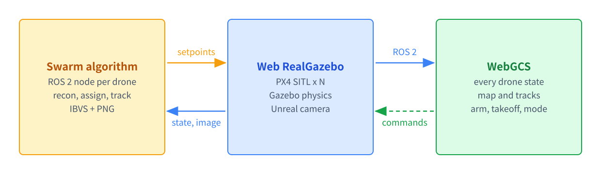
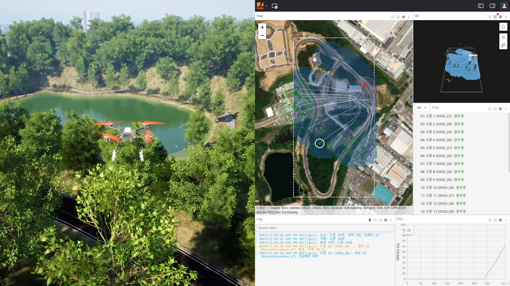
| 시간 | 단계 | 내용 |
|---|---|---|
| 0:00 | 이륙 | 드론 51대 동시 이륙 |
| 0:08 | 대형 구성 | 리더(X500_252)를 중심으로 군집 대형 구성 |
| 0:26 | 군집 정찰 | 리더를 따라 대형을 유지하며 지상 표적 탐색 |
| 0:52 | 표적 1 | 리더 카메라로 탐지, 드론 15대 돌입해 명중 |
| 1:23 | 표적 2 | 교차로 부근에서 탐지, 자폭 공격으로 명중 |
| 1:56 | 표적 3 | 탐지 후 자폭 공격으로 명중 |
| 2:09 | 귀환 | 리더가 출발지로 돌아와 착륙 |
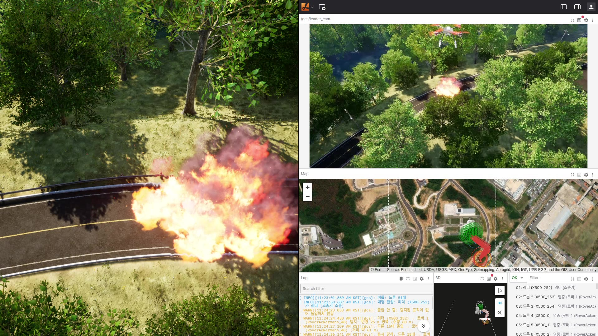
| No. | 매뉴얼 | 내용 |
|---|---|---|
| 1 | 설치 가이드 | 서버와 호스트 설치 |
| 2 | 운영 가이드 | 접속, 소환, 뷰어, WebGCS |
| 3 | 시나리오 작성 가이드 | 기체 배치와 명령 작성 |
| 4 | 모듈 추가 가이드 | ROS 2 로 알고리즘 결합 |
| 5 | C-Track 월드 매뉴얼 | 기후, 편집, 화재 |